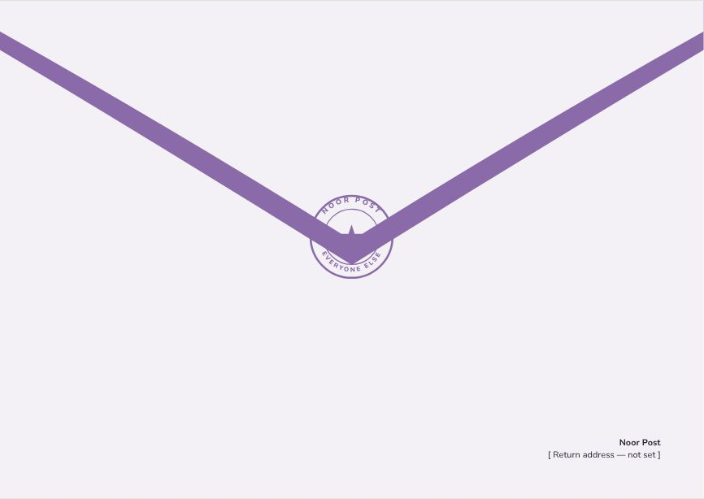
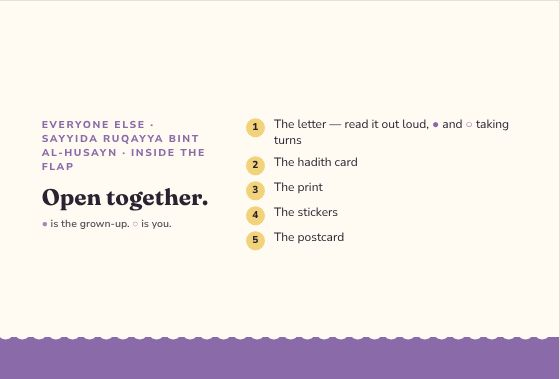
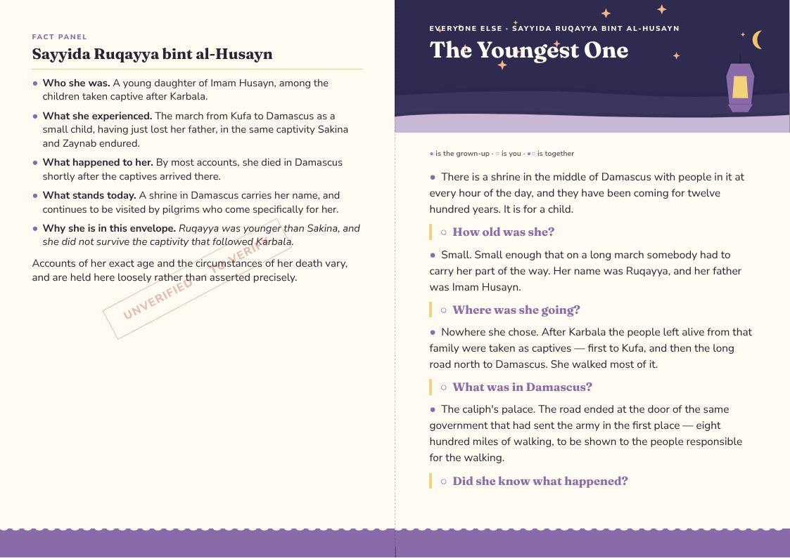
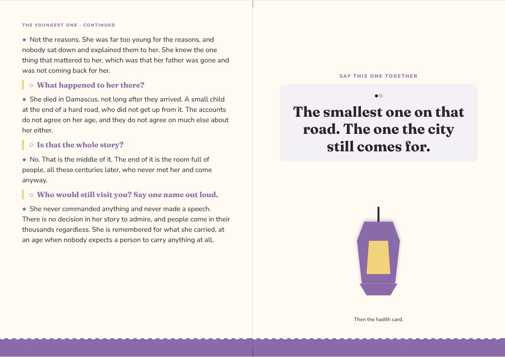
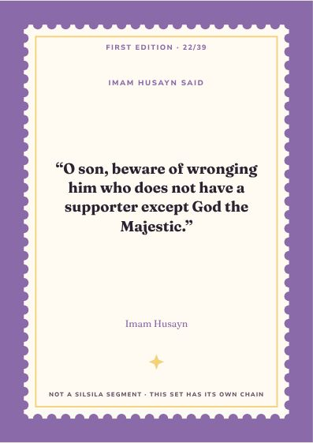
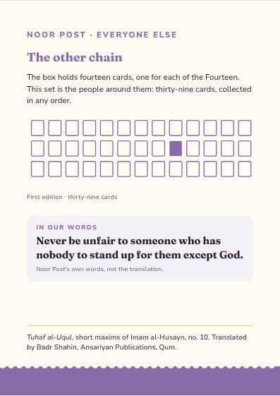
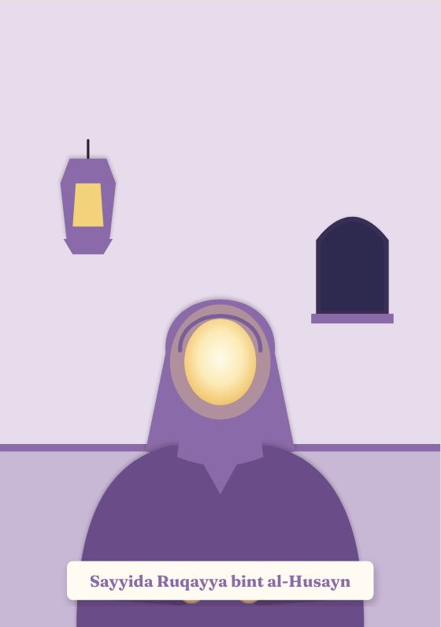
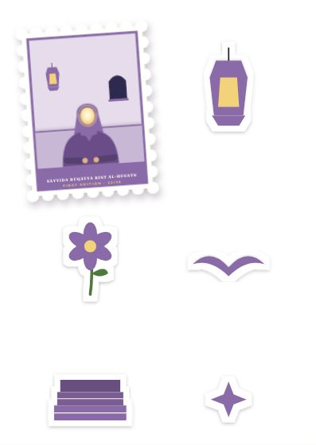
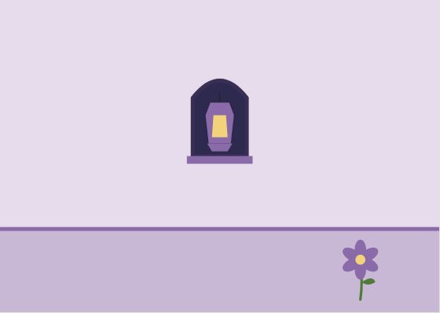

Everyone Else
Sayyida Ruqayya bint al-Husayn
Ruqayya was younger than Sakina, and she did not survive the captivity that followed Karbala.
Inside the flap
Open together.
- The letter — read it out loud, ● and ○ taking turns
- The hadith card
- The print
- The stickers
- The postcard
● is the grown-up. ○ is you.
The Youngest One
● the grown-up · ○ the child · ●○ together
●There is a shrine in the middle of Damascus with people in it at every hour of the day, and they have been coming for twelve hundred years. It is for a child.
○How old was she?
●Small. Small enough that on a long march somebody had to carry her part of the way. Her name was Ruqayya, and her father was Imam Husayn.
○Where was she going?
●Nowhere she chose. After Karbala the people left alive from that family were taken as captives — first to Kufa, and then the long road north to Damascus. She walked most of it.
○What was in Damascus?
●The caliph's palace. The road ended at the door of the same government that had sent the army in the first place — eight hundred miles of walking, to be shown to the people responsible for the walking.
○Did she know what happened?
●Not the reasons. She was far too young for the reasons, and nobody sat down and explained them to her. She knew the one thing that mattered to her, which was that her father was gone and was not coming back for her.
○What happened to her there?
●She died in Damascus, not long after they arrived. A small child at the end of a hard road, who did not get up from it. The accounts do not agree on her age, and they do not agree on much else about her either.
○Is that the whole story?
●No. That is the middle of it. The end of it is the room full of people, all these centuries later, who never met her and come anyway.
○Who would still visit you? Say one name out loud.
●She never commanded anything and never made a speech. There is no decision in her story to admire, and people come in their thousands regardless. She is remembered for what she carried, at an age when nobody expects a person to carry anything at all.
●○The smallest one on that road. The one the city still comes for.
Letter, reverse
SAYYIDA RUQAYYA BINT AL-HUSAYN
●Who she was. A young daughter of Imam Husayn, among the children taken captive after Karbala.
●What she experienced. The march from Kufa to Damascus as a small child, having just lost her father, in the same captivity Sakina and Zaynab endured.
●What happened to her. By most accounts, she died in Damascus shortly after the captives arrived there.
●What stands today. A shrine in Damascus carries her name, and continues to be visited by pilgrims who come specifically for her.
●Why she is in this envelope. Ruqayya was younger than Sakina, and she did not survive the captivity that followed Karbala.
Accounts of her exact age and the circumstances of her death vary, and are held here loosely rather than asserted precisely.
Hadith card · First Edition 22 / 39
O son, beware of wronging him who does not have a supporter except God the Majestic.
Tuhaf al-Uqul, short maxims of Imam al-Husayn, no. 10 · trans. Badr Shahin
A saying of Imam Husayn, matched to the smallest person in the room.
The design
Everyone Else — one style for the line
Every companion envelope shares one style, so the thirty-nine belong together: each front carries its person as a stamp. Every item at true size → · Print PDF



















The artwork fixes composition, colour and medium for every item; final illustration is still to be commissioned. The fact panel is still to verify.